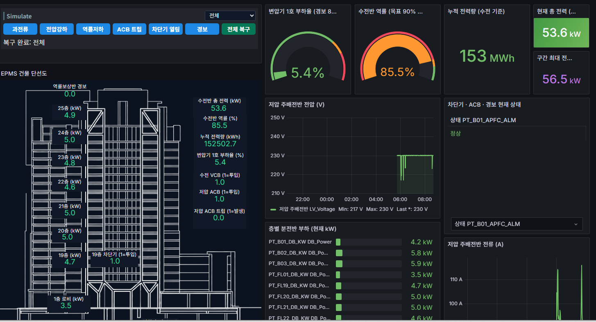

Purpose
This is a simulation environment for testing a Modbus-based electrical facility monitoring system installed in a building. Without any physical equipment, it covers the full flow from device → collection → storage → anomaly monitoring → visualization, so the workflow and operating procedures can be verified.
- Build and understand the data flow of a monitoring system.
- Practice how to check and respond when an anomaly occurs.
- Rehearse operating procedures and fault response without physical equipment.
Practical Use: Replace Only the Edge RTU
Replace
- Swap the simulator for a real RTU
- Field unit ID, IP, and port settings
- Verify the register map against the device manual
Keep
- Collector polling and fault isolation
- DB point configuration
- InfluxDB storage and Grafana dashboards
For sites using RS-485, a Modbus TCP gateway minimizes changes to the collector configuration.
Architecture
- The simulator serves values over Modbus TCP on port 502.
- The collector reads point definitions from PostgreSQL and polls each device.
- Faults are injected through the HTTP control API on port 8080.
Power Hierarchy
| Unit | Device | Role | Notes |
|---|---|---|---|
| 1 | B01_HV | Main switchboard (HV) | Top level, ST status |
| 2 | B01_TR01 | Transformer #1 | Alarm |
| 3 | B01_LV | Low-voltage main distribution board | ST, TRIP |
| 4 | B01_APFC | Power factor correction panel | No power flow, alarm only |
| 5 | B01_DB | Distribution board | Weight 0.07 |
| 6 | FL01_DB | Distribution board | |
| 7 | FL19_DB | Distribution board | ST |
| 8–13 | FL20–FL25_DB | Distribution boards | |
| 14 | B02_DB | Distribution board | |
| 15 | B03_DB | Distribution board |
- Power flows from top to bottom, and each level's total becomes the value of the level above.
- The 11 distribution boards split the building load by weight (0.06–0.10).
- The power factor correction panel carries no power and only handles alarms.
Simulator Operation
- Time-of-day occupancy: Interpolates the daily occupancy curve per minute to get building utilization.
- Building load: Computes a value between a 30 kW base and a 520 kW peak, with ±2% variation.
- Hierarchical aggregation: Builds upper levels in order: distribution board sum → LV board → transformer → main switchboard.
- Register update: Writes float32 values as two words (ABCD order) into the SDM630 map every second.
Collector & Point Configuration
PostgreSQL (primary)
- Joins tb_point, tb_asset, tb_space, and tb_site
- Validates that there is exactly one site
- Loads only Modbus-mapped points
point_map.yaml (fallback)
- Switches automatically when the DB connection fails
- Same structure in a configuration file
- Runs locally without a DB
- Type handling: di reads Discrete Input bits; others read float32 values multiplied by scale.
- Fault isolation: If one device read fails, a warning is logged and the collector continues with the next device.
- Write method: Writes to InfluxDB in one batch per cycle.
Modbus Register Map (SDM630)
| Key | Address (0-base) | Unit | Description |
|---|---|---|---|
v_l1, v_l2, v_l3 | 0x0000, 0x0002, 0x0004 | V | Phase voltage |
i_l1, i_l2, i_l3 | 0x0006, 0x0008, 0x000A | A | Current |
p_l1, p_l2, p_l3 | 0x000C, 0x000E, 0x0010 | W | Active power per phase |
pf_l1 | 0x001E | - | Power factor |
p_total | 0x0034 | W | Total active power |
s_total | 0x0038 | VA | Total apparent power |
freq | 0x0046 | Hz | Frequency |
kwh_import | 0x0156 | kWh | Total imported energy (verify against manual) |
Float32 values are sent as two 16-bit registers, high word first (ABCD order). When connecting a real device, first confirm that the addresses and data formats in the device manual match this map.
Operating Procedure
- Start: Bring up the simulator and collector with
docker compose up -d. - Verify collection: Check the collector logs for point loading and writes.
- Inject a fault: Trigger an event such as overcurrent or trip through the HTTP API.
- Check the screen: In Grafana, confirm that the anomaly is detected and the states change.
Commands
# Build and start the simulator and collector
docker compose up -d --build epms-modbus-sim epms-modbus-collector
# Check collector logs (including DB load status)
docker logs epms-modbus-collector 2>&1 | grep -E "point_map|DB 로드 실패"On success, the logs show point_map: DB에서 25개 포인트 로드 and 적재 N개 포인트.
Fault Injection
# Inject overcurrent on unit 7
curl -X POST "http://localhost:8080/inject?scenario=OVERCURRENT&unit=7"
# Clear faults on all units
curl -X POST "http://localhost:8080/inject?scenario=CLEAR&unit=all"
# Query current status
curl "http://localhost:8080/status"| Scenario | Effect |
|---|---|
OVERCURRENT | Current +25% |
VOLTAGE_SAG | Voltage −17% |
LOW_PF | Power factor fixed at 0.70 |
TRIP | Breaker trip (TRIP=1, ST=0) |
ALARM | Alarm contact ON |
OPEN | Breaker open (ST=0) |
CLEAR | Clear all faults and DI states |
In the simulator console, enter <unit|all> <fault>. Examples: 7 overcurrent, all clear
Grafana Monitoring Screen

- Top: Fault injection buttons and full reset
- KPIs: Total power, power factor, cumulative energy, transformer load ratio
- Single-line diagram: Per-floor distribution board power and breaker status
- Bottom: Voltage and current trends, load per distribution board
After a fault is injected, the status panels and charts update immediately, and return to normal values after recovery.
Limitations and Next Steps
- Verification: The
kwh_importaddress (0x0156) needs confirmation against the SDM630 manual. - State retention: Fault states are kept only in memory and reset when the simulator restarts.
- Communication: Sites using RS-485 need additional Modbus TCP gateway configuration.
- Demo screen: A Grafana Canvas-based Modbus demo screen is planned to be completed.
Troubleshooting
DB load falls back to YAML
If the collector connects before PostgreSQL is ready, it fails with Connection refused and falls back to YAML. Compare the log timestamp with the PostgreSQL startup log to confirm a startup-order issue. To prevent it, add a health check to postgres and set condition: service_healthy in the collector's depends_on.
Network error when using a fixed IP
The error no configured subnet contains IP address occurs when a fixed IP is assigned without defining a subnet on the network. The collector connects by service name (epms-modbus-sim), so removing the fixed IP is recommended.